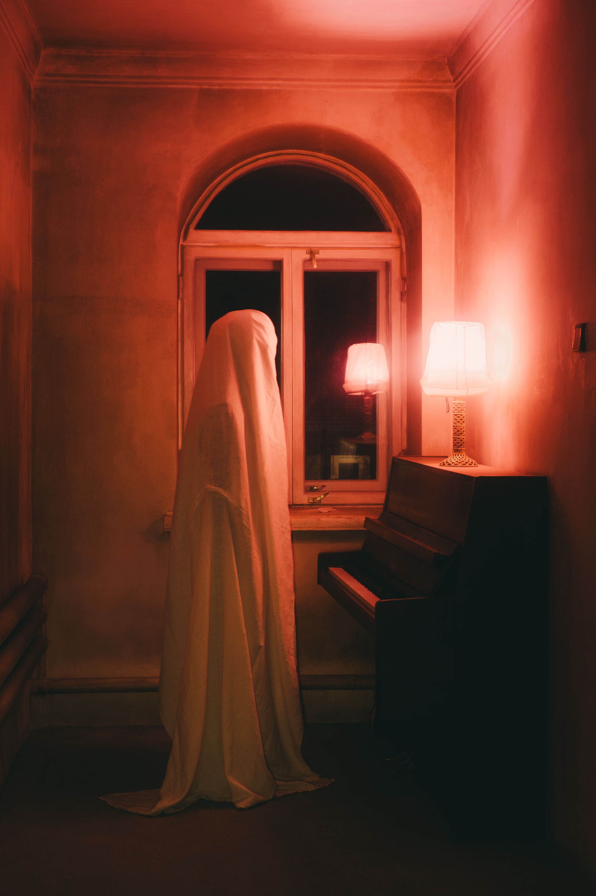

Slasher
Slasher films center around a relentless killer stalking and eliminating a group of victims one by one, usually using blades or sharp tools.
Defining film: Halloween (1978)
Four subgenres, each with a short description and the film that defines them. Every card below is a place to start your next scary movie night.
These pages share the navigation: Home, Types of Horror, and Horror Hall of Fame.
Slasher films center around a relentless killer stalking and eliminating a group of victims one by one, usually using blades or sharp tools.
Defining film: Halloween (1978)

Supernatural horror relies on ghostly spirits, possessions, demons, and otherworldly phenomena that defy natural laws.
Defining film: The Exorcist (1973)

This subgenre aims to unsettle viewers by targeting mental vulnerabilities, paranoia, guilt, emotional instability, and distorted reality.
Defining film: The Shining (1980)

Presented as raw, discovered video recordings, found footage relies on realistic handheld camera work to create an intimate sense of dread.
Defining film: The Blair Witch Project (1999)
One choice and one button. Answers feed the community list on the Horror Hall of Fame page.